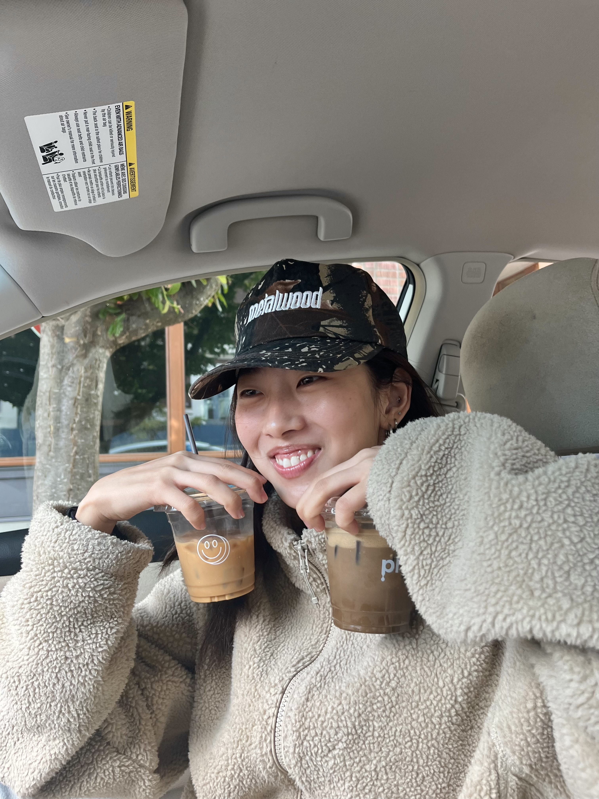

Hello!! I'm Mingyo (she/her)—though most people call me Min. I'm an Anthropology and Media Studies student, who occasionally likes to dabble in a multitude of hobbies. I also love coffee, as shown by my photo!
While I've dabbled in many different forms of creating art, the ones that have stuck with me are writing and photography. I've found these to be the best ways I can express myself, as I find it difficult to verbalize how I'm feeling most of the time. I'm a beginner/novice to photography, but it's great to be able to capture details from everyday life I find beautiful. My writing is mostly in the form of journaling and writing letters to my loved ones; I'm able to think over how I can best convey and process my emotions—both positive and negative.
